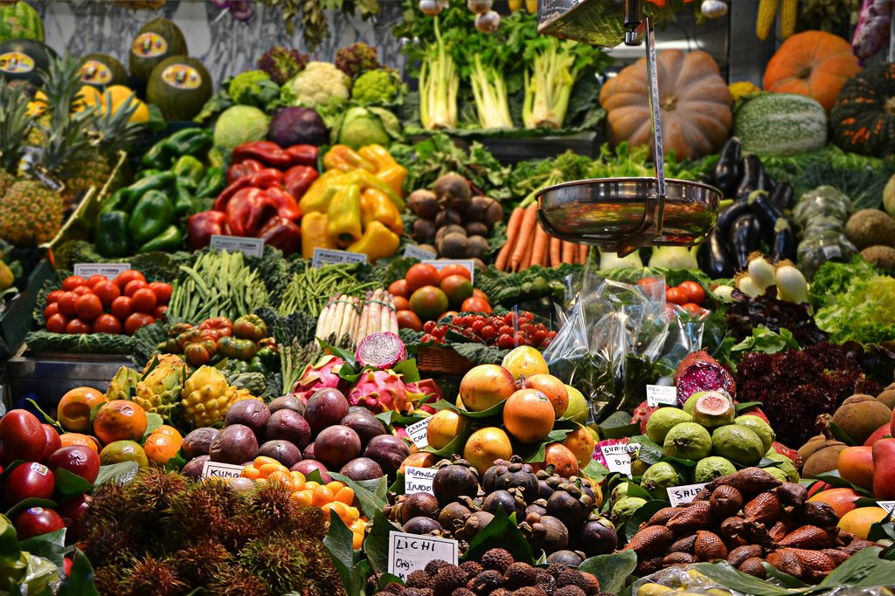
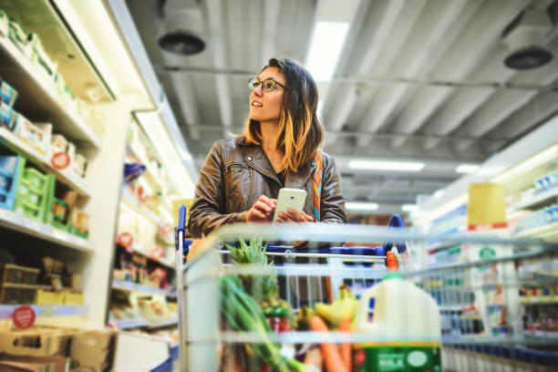
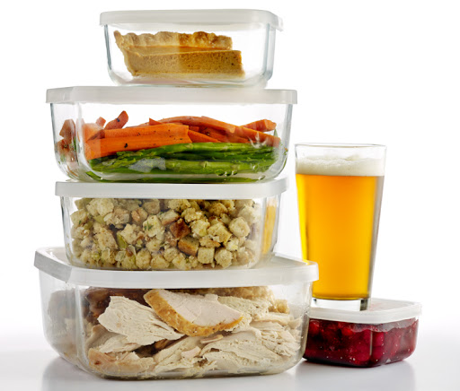

Home
Philosophy
Food Waste
Hunger
Facts and Statistics
Prevent Food Waste
Get In Touch With Us
Prevent Food Waste
1. Start Shopping Realistically:- Instead of buying surplus food buy only what you need,
remember you can always go to the supermarket in the event you need something,
there is no need to overbuy food products that will more than likely end up binned.
To help make this task a little easier for you, I would recommend creating a shopping list
and only going into the supermarket isles that have something you require, this will prevent you
from getting side-tracked by wanting to buy something you don't exactly need.
This method not only helps reduce food waste it also help you save some extra money.
2. Store Food Correctly: - To avoid food perishing after you purchase the product, you need to
make sure that you are aware of how to store the food correctly.
Examples of storing food would include; freezing refrigerated food below 5 degrees and
storing food in a sealed air-tight container, amongst many others.
If you are unsure of how to store a certain food product, you can check the label at
the back of the package and storage instructions should be present, if your purchased
food product doesn't come in a package then you can research on ways to store the specific product.
However, please do not hesitate to reach out to us if you have an inquiry and we will
get back to you as soon as possible.
3. Save Leftovers: - To prevent wasting a meal you've cooked for dinner, it is a good
idea to store that food and use it the next day. I know what your thinking "That's disgusting
I would never eat leftovers!" Believe it or not you can save yourself a lot of money and time in doing so.
If you don't think that you'll enjoy eating the same food for two different meals, then
I suggest repurposing the food, let me elaborate. You cook spaghetti the night before
and you save the leftovers for lunch, but you want some Chinese takeout instead.
All you have to do is stirfry the noodles and throw in some vegetables, spices and
soy sauce and now you have Chinese stir fry noodles! You not only get the best of both
worlds but you also help save some food, money and time.
There are several ways to reduce and prevent food waste, above are just a few of them,
however, this list is not all-inclusive of the several ways that you can help.
I chose these three solutions in particular because they are the easiest methods the someone can possibly implement.



Return to the Homepage